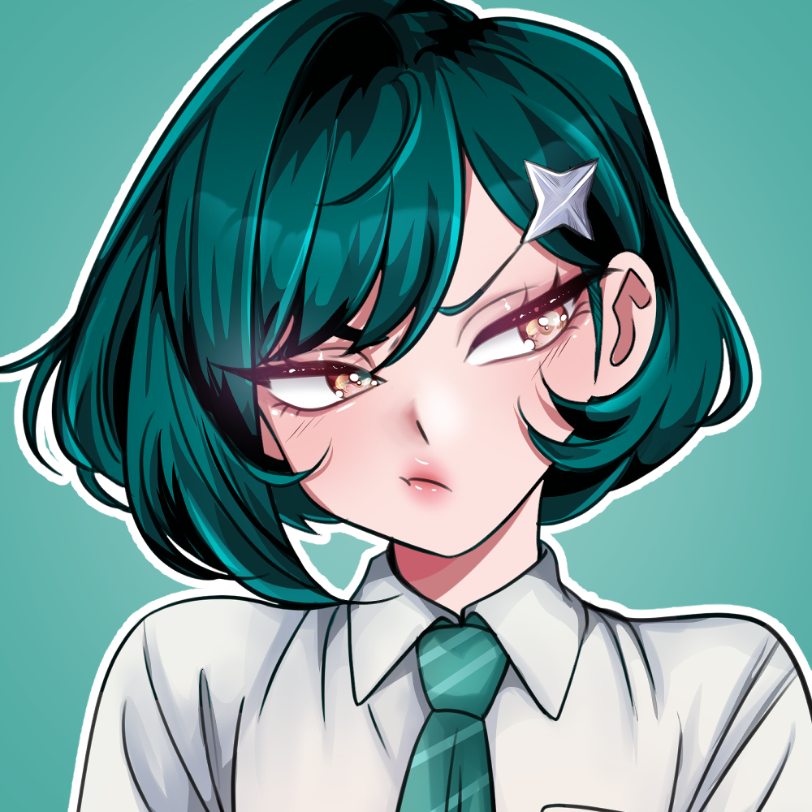

01 · CASUAL
Everyday outfit
Her usual off-duty look.

Chisa is a calm, composed and sharp-tongued girl who rarely allows others to see what she is truly feeling. She tends to keep people at a distance and prefers to maintain complete control over herself and her surroundings.
Despite her cold exterior, Chisa is much more caring than she would ever admit. She has a strong sense of responsibility and cannot stand watching someone weak-willed being bullied.
Rather than helping openly, she prefers to step in from the shadows before anyone can notice.
She has a deep appreciation for theater, traditional Asian culture, history, guohua, shogi and calligraphy.
A collection of outfits worn throughout school life, weekends and special occasions.
Her usual off-duty look.

Her academy uniform.

One of her favorite places to be.

Reserved for special evenings.

A more elegant side of Chisa.

Practical clothes for movement.
Chisa rarely lets people get close, which makes every meaningful connection especially important.

After watching one of Natsumi's performances, Chisa felt an interest in someone for the first time. Since then, she has followed every showing of the play "The Mouse Princess," where Natsumi played a thief from the kingdom of Notre Dame.
Ever since, Chisa has been buying up all the merchandise featuring Natsumi, secretly dreaming of talking to her someday.

Every time she has to go to the library, Chisa takes three deep breaths.
She gets annoyed by the girl's insecurity and the way she blushes every time their eyes meet. But secretly, Chisa helps Nezuko whenever she's being teased or when the girl needs help.

Chisa and Marika share mutual respect. Although Chisa gets annoyed by Marika's clinginess, they get along well.
They go to the theater together every month and discuss Asian art. Marika never misses a chance to touch the girl or make a dirty joke, inevitably making Chisa blush.

Born into a traditional Japanese-Chinese family, Chisa possessed remarkable self-control from childhood.
She quickly learned how to hide her true feelings behind a calm and cold expression.
Her parents followed a strict upbringing and expected discipline from their daughter.
From an early age, Chisa was introduced to theater, guohua, shogi and calligraphy, developing a deep appreciation for traditional arts and culture.
“She learned early not to show everything she felt.”
Her family taught her discipline, culture and self-control.
Her sharp tongue and strong sense of justice often brought trouble.
She still helps people, but now prefers to do it from the shadows.
Personality Strict
Dream To be understood
Interests Traditional arts
Biggest problem Sharp tongue
Personality More restrained
Dream To protect others
Interests Theater & history
Weakness Emotions
“I don't need everyone to understand me. I only need to know that I did the right thing.”
— ChisaShe secretly buys every piece of merchandise featuring Natsumi that she can find.